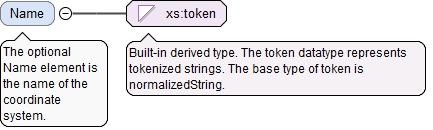

The optional Name element is the name of the coordinate system.
Diagram

Type
xs:token
Properties
content
simple
minOccurs
0
Source
<xs:element name="Name" type="xs:token" minOccurs="0"><xs:annotation><xs:documentation>The optional Name element is the name of the coordinate system.</xs:documentation></xs:annotation></xs:element>
<xs:element name="NominalTransform" type="TransformMatrixType" minOccurs="0"><xs:annotation><xs:documentation>The optional NominalTransform element gives the nominal transformation matrix used to establish the coordinate system.</xs:documentation></xs:annotation></xs:element>
The optional asmPathId attribute is a reference used for locating the id of an assembly path. If the asmPathXId attribute is not used, the asmPathId is a reference to an assembly path in the AsmPaths of the local document. If the asmPathXId is used, the asmPathId is the local id of an external QIF document, and the asmPathXId is a reference to an assembly path in the external QIF document. The assembly path (instantiation chain) unambiguously identifies a model entity within an assembly.
The optional asmPathXId attribute, if used, is a reference to the id of an assembly path in the external document identified by the asmPathId. The asmPathXId must not be used if the asmPathId is not used.
The optional xId attribute is a reference to the id of a QIF object in an external document. A QIF object in an external QIF document can be referenced by using references to two QIF ids: the id of the external document reference of type ExternalQIFDocumentReferenceType found in the local document and the id of the object found in the external document.
Source
<xs:element name="InternalCADCoordinateSystemId" type="QIFReferenceFullType" minOccurs="0"><xs:annotation><xs:documentation>The optional InternalCADCoordinateSystemId element identifies an associated coordinate system defined in an internal product definition.</xs:documentation></xs:annotation></xs:element>
The optional asmPathId attribute is a reference used for locating the id of an assembly path. If the asmPathXId attribute is not used, the asmPathId is a reference to an assembly path in the AsmPaths of the local document. If the asmPathXId is used, the asmPathId is the local id of an external QIF document, and the asmPathXId is a reference to an assembly path in the external QIF document. The assembly path (instantiation chain) unambiguously identifies a model entity within an assembly.
The optional asmPathXId attribute, if used, is a reference to the id of an assembly path in the external document identified by the asmPathId. The asmPathXId must not be used if the asmPathId is not used.
The optional xId attribute is a reference to the id of a QIF object in an external document. A QIF object in an external QIF document can be referenced by using references to two QIF ids: the id of the external document reference of type ExternalQIFDocumentReferenceType found in the local document and the id of the object found in the external document.
Source
<xs:element name="ExternalCADCoordinateSystemId" type="QIFReferenceFullType" minOccurs="0"><xs:annotation><xs:documentation>The optional ExternalCADCoordinateSystemId element identifies an associated coordinate system defined in an external product definition.</xs:documentation></xs:annotation></xs:element>
The required n attribute is the number of alignment operations in the list.
Source
<xs:element name="AlignmentOperations" type="AlignmentOperationsType" minOccurs="0"><xs:annotation><xs:documentation>The optional AlignmentOperations element gives the ordered series of alignment operations used to establish the coordinate system.</xs:documentation></xs:annotation></xs:element>
The optional SequenceNumber element is the sequence number of the coordinate system used to order coordinate systems with the same name from an iterative alignment. The sequence numbers in an ordered set of coordinate systems should be assigned 1, 2, 3, ...
<xs:element name="SequenceNumber" type="NaturalType" minOccurs="0"><xs:annotation><xs:documentation>The optional SequenceNumber element is the sequence number of the coordinate system used to order coordinate systems with the same name from an iterative alignment. The sequence numbers in an ordered set of coordinate systems should be assigned 1, 2, 3, ...</xs:documentation></xs:annotation></xs:element>
The CoordinateSystemType defines a coordinate system by giving a QIF id, some notes, a name, transform matrices and the alignment operations used to define the coordinate system.
The id attribute is the QIF id of the coordinate system, used for referencing.
Source
<xs:complexType name="CoordinateSystemType"><xs:annotation><xs:documentation>The CoordinateSystemType defines a coordinate system by giving a QIF id, some notes, a name, transform matrices and the alignment operations used to define the coordinate system.</xs:documentation></xs:annotation><xs:sequence><xs:element ref="Attributes" minOccurs="0"><xs:annotation><xs:documentation>The optional Attributes element contains user defined attributes (typified, binary array, or XML structured).</xs:documentation></xs:annotation></xs:element><xs:element name="Name" type="xs:token" minOccurs="0"><xs:annotation><xs:documentation>The optional Name element is the name of the coordinate system.</xs:documentation></xs:annotation></xs:element><xs:element name="NominalTransform" type="TransformMatrixType" minOccurs="0"><xs:annotation><xs:documentation>The optional NominalTransform element gives the nominal transformation matrix used to establish the coordinate system.</xs:documentation></xs:annotation></xs:element><xs:element name="InternalCADCoordinateSystemId" type="QIFReferenceFullType" minOccurs="0"><xs:annotation><xs:documentation>The optional InternalCADCoordinateSystemId element identifies an associated coordinate system defined in an internal product definition.</xs:documentation></xs:annotation></xs:element><xs:element name="ExternalCADCoordinateSystemId" type="QIFReferenceFullType" minOccurs="0"><xs:annotation><xs:documentation>The optional ExternalCADCoordinateSystemId element identifies an associated coordinate system defined in an external product definition.</xs:documentation></xs:annotation></xs:element><xs:element name="AlignmentOperations" type="AlignmentOperationsType" minOccurs="0"><xs:annotation><xs:documentation>The optional AlignmentOperations element gives the ordered series of alignment operations used to establish the coordinate system.</xs:documentation></xs:annotation></xs:element><xs:element name="SequenceNumber" type="NaturalType" minOccurs="0"><xs:annotation><xs:documentation>The optional SequenceNumber element is the sequence number of the coordinate system used to order coordinate systems with the same name from an iterative alignment. The sequence numbers in an ordered set of coordinate systems should be assigned 1, 2, 3, ...</xs:documentation></xs:annotation></xs:element></xs:sequence><xs:attribute name="id" type="QIFIdType" use="required"><xs:annotation><xs:documentation>The id attribute is the QIF id of the coordinate system, used for referencing.</xs:documentation></xs:annotation></xs:attribute></xs:complexType>
<xs:attribute name="id" type="QIFIdType" use="required"><xs:annotation><xs:documentation>The id attribute is the QIF id of the coordinate system, used for referencing.</xs:documentation></xs:annotation></xs:attribute>